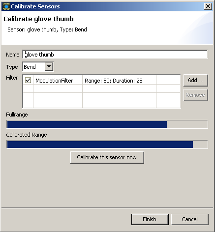
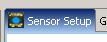
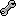
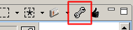

Calibration
I. Why should I calibrate?
The GloveBox and JGlove can handle different types of sensors like bend, force and tilt sensors.
Every type and every individuell sensor has its own range, which is normally somewhere between
0 and 1000. To compare the different sensors it is often necessary that all sensors
have the same range.
When you calibrate a sensor with JGlove the range is scaled to a 8 bit range (0 - 255).
Espacially when you want to "midify" your senors it is necessary to
calibrate them. Because of the MIDI specification, a range of 7 bit (0 - 127) is
necessary for MIDI apllications. You get the best result with calibrated sensors.
II. How to calibrate a sensor

Image: Calibration Wizard
-
Open the Sensor Setup (  ).
-
Click the "spanner" (  ) button of one sensor.
-
If you want you can rename the sensor and change the type of the sensor.
- Add a filter to the sensor.
Tip: Sometimes it is useful to add the filter before the calibration.
Especially when calibrating a tilt sensor it is suggested to add
the tilt filter before the calibration. It will reduces "flicker"
and makes it easier to calibrate.
- Press the "Calibrate this sensor now" Button.
Now you have 3 seconds time to set the sensor in your "maximum" position.
And then you have 3 seconds time to set the "minimum" position.
Tip: If you want you can exchange the "maximum" and "minimum" position while
calibrating. JGlove will automaticaly take the higher value as the maximum.
- Check with the help of the "Calibrated Range" bar if the calibration is like you want it.
If you are not satisfied with the result repeat step 5.
- If you want to keep the calibration press "Finish".
If you don´t want to keep the calibration press "Cancel". Canceling will
restore the old calibration, if there was any.
III. How to calibrate a selection of sensors
-
Open the Sensor Setup ( ).
- Choose a selection of sensors you want to calibrate.
- Click the "spanner" button in the tool bar of the Sensor Setup (  ).
- Choose the selected sensors with the help of the "Next >" and "< Back" buttons
and calibrate the sensor (see "How to calibrate a sensor" 3 - 6).
- If you want to keep the changed calibrations press "Finish".
If you don´t want to keep the changed calibrations press "Cancel".